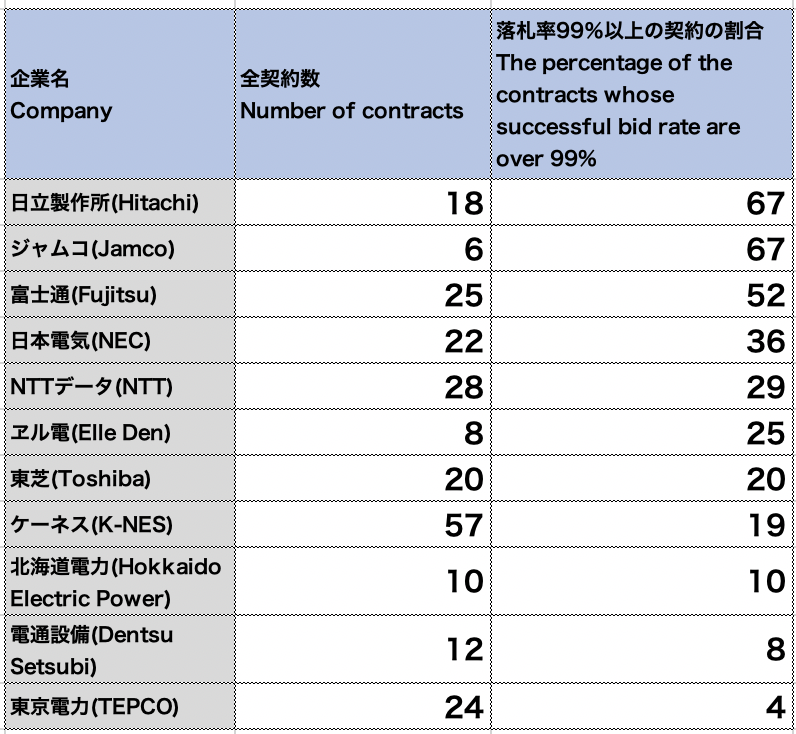

We analyzed the official journal of Japanese government and picked up every disclosed results of public biddibg. We put more than 9000 results in the table and sorted them out.
The official journal is not only written in Japanese but its PDF files are styled in very ugly format and unique encode. I don't know if the government has the intension to disturb the check by the people. It was actually heavy work.
But we could managed to plot every contracts between the government and private companies. Look at the chart below.
The scattered chart of public bidding in 2019
X axis is contract price, and Y axis is the successful bid rate --- at how much percent of the expected price, the company succeeded to win the contract.
Sources: "Kanpou" -- the official journal of Japanese government
Image: by Kenji Asada
Companies contract at the almost same price as expected in 20% of the competitive biddings
This chart showes the prices and successful bid rates of every competitive bidding in 2019. I colored largest contractors for Japanese government. Yellow is NTT Data, lime is Hitachi, magenta is Fujitsu, cyan is NEC and indigo is Toshiba.
Generally speaking, in competitive bidding, companies which are thurst for the contract will offer the price as low as they can. So, the successful bid rate(the ratio of the contract price to the expected price) will be less than 95% in healthy biddings.
But reality is different from the ideal model. We found a lot of contracts whose successful bid rate are over 99%. The number of all competitive biddings we detected was 1255, and 242 contracts(19.2%) were contracted at larger than 99% of the expected price.
This rate is unhealthy. The government failed to purchase the goods and servises at less expensive price. This means that the tax are not being spent efficiently. But we cannot determine if the cause of inefficiency is the failure of the bidding system or injustice by the companies and government.
Compare the two charts above. The left chart showes the ranking of the number of contracts in 2019. The top company, K-NES is actually a small company, but they focus on the electric constraction orders from local governments. 2nd position, NTT Data and 4th position Fujitsu are the largest system engineering companies. Hitachi is the largiest company in the electronics and heavy industry. As a conclusion, this ranking is reasonable.
However, when we extracted the contracts of which the successful bid rate are higher than 99%(the right chart), the member of the ranking had changed. Fujitsu and Hitachi climbed up to the 1st and 2nd position. In the 5th - 10th position, electric power companies had disappeared and we saw the names of aerospacial technology companies.
Why could some companies get the contract at so high rate?
We calcurated the percentage of high successful bid rate contracts(over 99%) for each companies. The next table is the ranking in the percentage(We omitted the companies which have less than 5 contracts).

Sources: "Kanpou"
Image: by Kenji Asada
Surprisingly, more than half of the contracts by the government with Hitachi, Jamco and Fujitsu were at the price over the 99% of that of expected. Why?
There are some possible reasons ---
Those companies are so competitive that other companies cannot offer the goods or services which meet the technical requirements.
The strategy of those companies are so benefit oriented --- i.e. they always offer at the price including rich margin for any biddings.
But those explanations don't clear the doughts. Even if there weren't any competitor in Japan, why did not foreign companies offer lower prices. And the hypothesis of "strategy" is also not persuasive. Because those companies got contracts at low bid rate in other cases.
The mystery still remains. Someone are conducting injustice? The system of public bidding has critical defect? For further investigation, we need to try direct interviews and reserches to the government and companies.